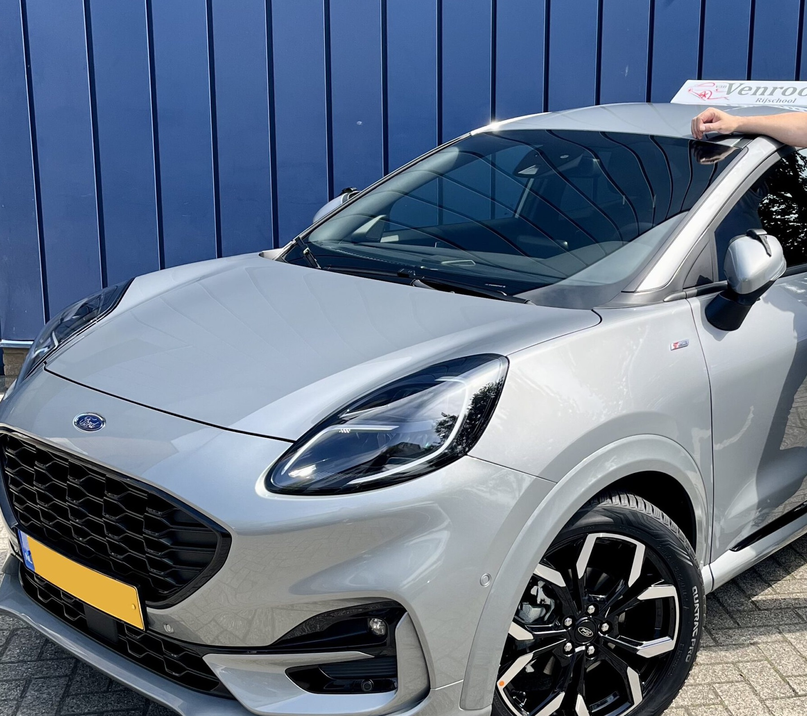

Van eerste les tot geel bord
Autorijles voor rijbewijs B in Rosmalen, 's-Hertogenbosch en omgeving. Volle uren van 60 minuten, één vaste instructeur en een route die van dag één richting je examen loopt.
Zo rijd je van A naar GESLAAGD
De proefles: kijken of het klikt
Je stapt in, Frank stelt je op je gemak en je gaat gewoon rijden. Na afloop hoor je eerlijk waar je staat en wat je ongeveer nodig hebt. Klikt het niet, dan zit je nergens aan vast. Klikt het wel, dan heb je meteen je vaste instructeur te pakken.
Lessen die ergens heen gaan
Elke les duurt 60 minuten, dus je komt echt aan rijden toe. Je begint rustig in de wijk en groeit stap voor stap door naar het drukke verkeer van Den Bosch: rotondes, turborotondes, de ring en de snelweg. Wat je vandaag leert, bouwt verder op vorige week.
De tussentijdse toets: examen oefenen zonder examen
Halverwege doe je een generale repetitie bij het CBR, met een echte examinator. Je weet daarna precies waar je staat, en bij een goed resultaat kun je vrijstelling verdienen voor de bijzondere verrichtingen. De cijfers bij Van Venrooij liegen niet: alle 38 tussentijdse toetsen tot nu toe werden gehaald (bron: Clickdrive, augustus 2026).
Het examen: op bekend terrein
Je rijdt je praktijkexamen in het gebied waar je al die weken hebt geoefend. De kruispunten, de rotondes, de instinkers: jij kent ze al. En Frank rijdt met je mee naar het CBR, zoals hij er het hele traject al was.

Een Puma die je zelf temt
Je leert schakelen in een grijze Ford Puma ST-Line met het Van Venrooij-daklicht erop. Fris, sportief en overzichtelijk: een auto waar je als beginnende bestuurder snel vertrouwd mee raakt, en waar je na je examen een beetje afscheid van moet nemen.

Rijles in Rosmalen, Den Bosch en de dorpen eromheen
De rijschool staat in Rosmalen en lest in heel 's-Hertogenbosch en omgeving. Woon je in een dorp in de buurt, denk aan Empel, Nuland, Vinkel, Berlicum of Kruisstraat? Overleg even met Frank, ophalen is vaak gewoon te regelen.
Alle lessen zijn praktijkgericht in het examengebied van Den Bosch. Zo train je vanaf les één op de wegen waar het straks moet gebeuren.
- Lessen op ma t/m do tot 20:00, handig naast school of werk
- Ook op zaterdagochtend
- Theorie regel je zelf via het CBR, Frank denkt mee over de goede volgorde
Eerst maar eens één uur proberen?
Zo werkt het hier: eerst kijken of het klikt, dan pas plannen maken.